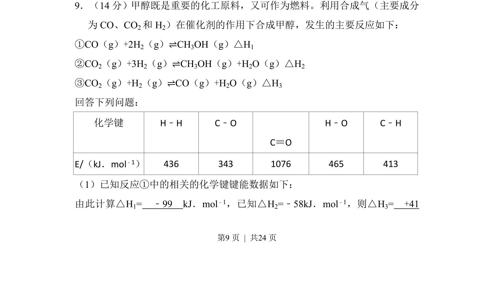
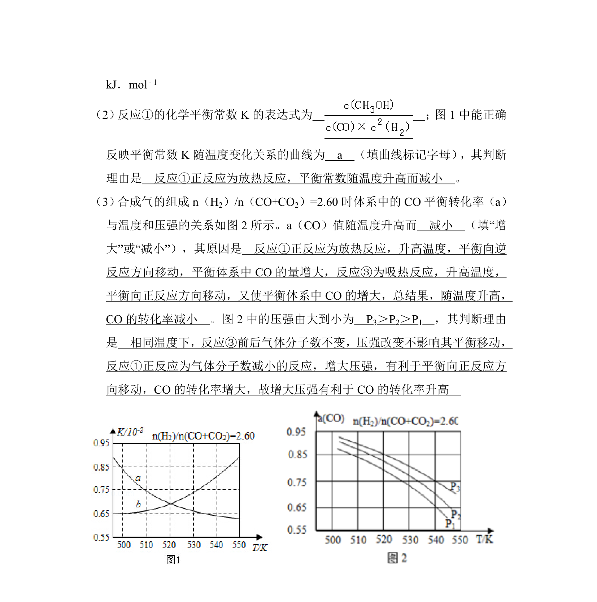
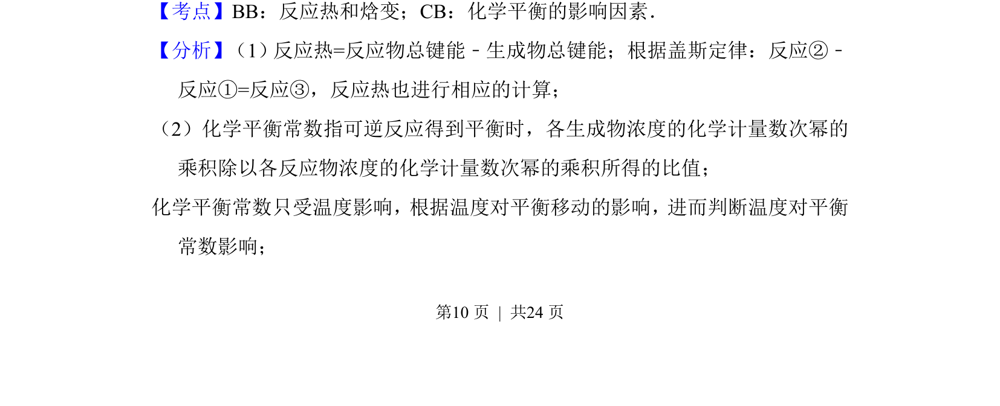
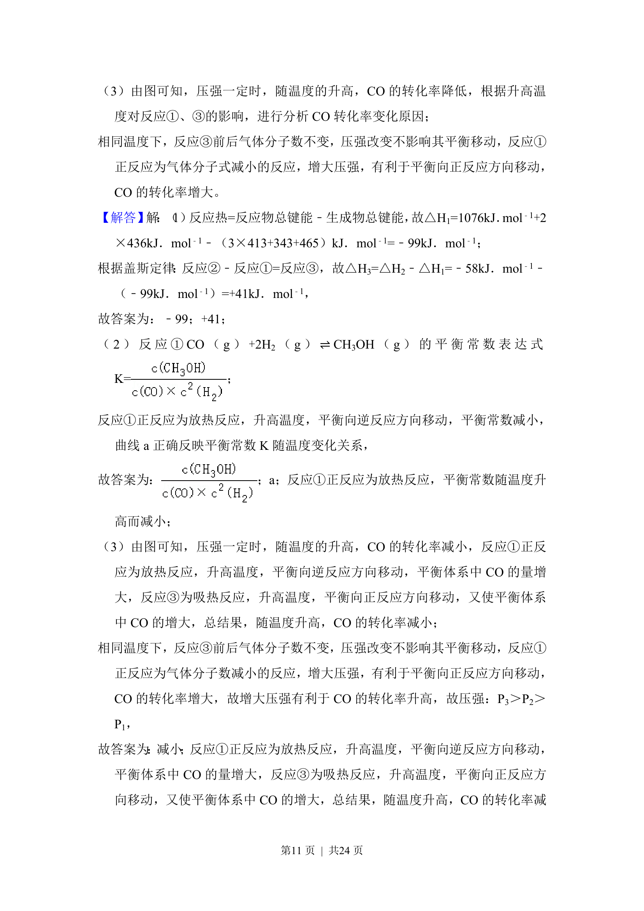
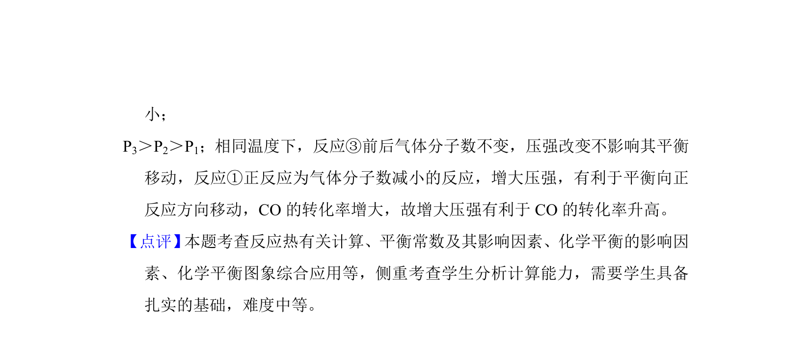

考点：反应热 盖斯定律 键能


该题通过键能数据计算反应①的焓变，并利用已知反应焓变结合盖斯定律求算反应③的焓变



📄 原 PDF 第 9 页：
素材/真题/吉林/2008-2024·（吉林）化学高考真题/2015年高考化学试卷（新课标Ⅱ）（解析卷）.pdf
9．（14分）甲醇既是重要的化工原料，又可作为燃料。利用合成气（主要成分 为CO、CO 2和H 2）在催化剂的作用下合成甲醇，发生的主要反应如下： ①CO（g）+2H2（g）⇌CH3OH（g）△H1 ②CO2（g）+3H2（g）⇌CH3OH（g）+H2O（g）△H2 ③CO2（g）+H2（g）⇌CO（g）+H2O（g）△H3 回答下列问题： 化学键 H﹣H C﹣O C≡O H﹣O C﹣H E/（kJ．mol﹣1） 436 343 1076 465 413 （1）已知反应①中的相关的化学键键能数据如下： 由此计算△H 1= ﹣99 kJ．mol ﹣1，已知△H 2=﹣58kJ．mol﹣1，则△H 3= +41